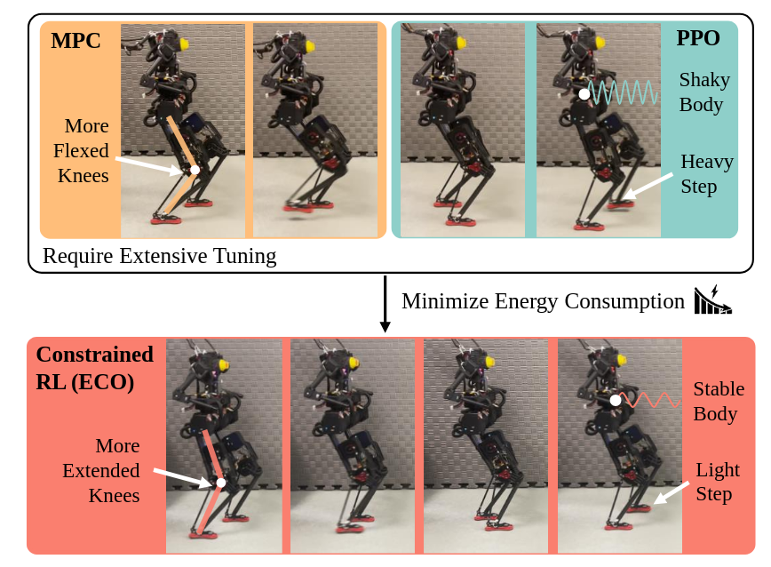
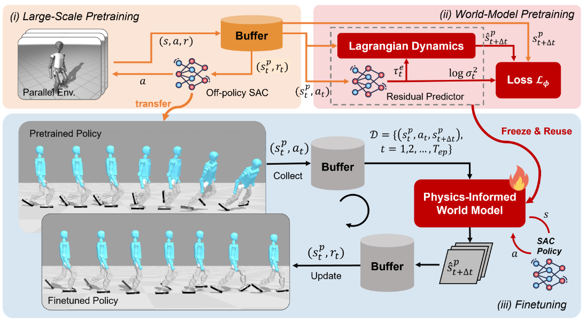
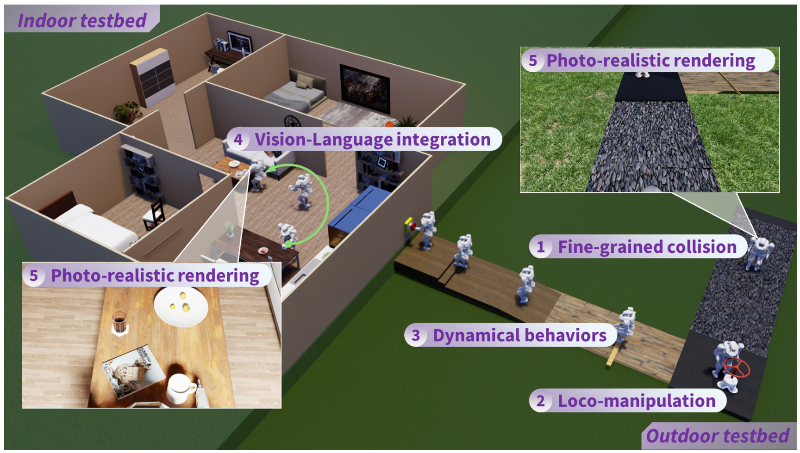
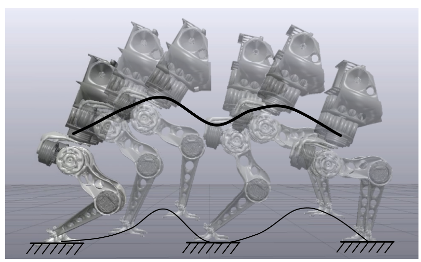
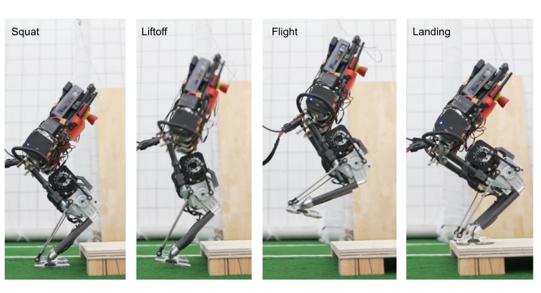
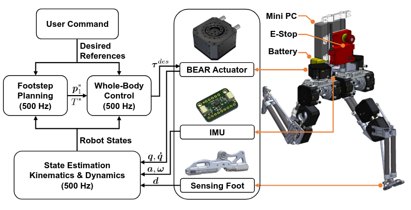
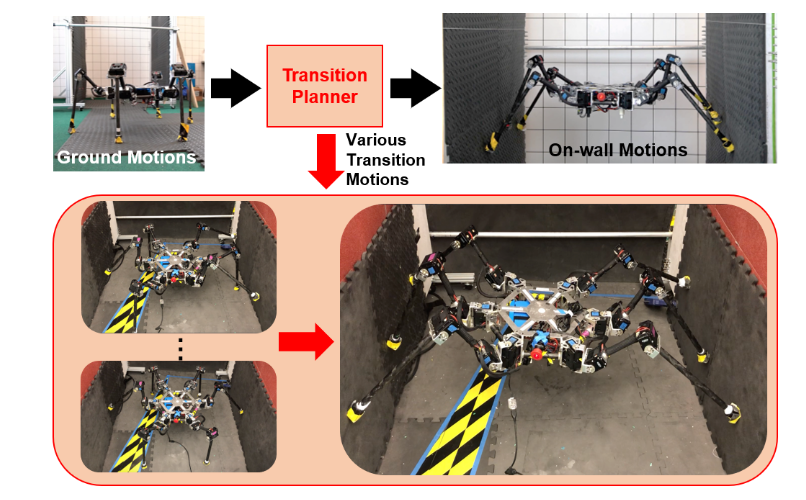

Photo by Yanqi Li
I am a robotics researcher working on humanoid control at BIGAI. Previously, I was fortunate to be advised by Professor Dennis Hong and received my Ph.D. in Mechanical Engineering from UCLA, where I built robots that walk, jump, climb, and occasionally made life difficult in the most interesting ways. My work spanned optimization-based locomotion planning, legged robot design, reinforcement learning, and dynamic control. Recent work focused on making humanoids more energy-efficient and capable in the real world with limited data. I am always passionate in bridging classic model-based control with learning-based methods to improve robustness and precision, particularly for humanoid loco-manipulation.
Outside the lab, I enjoys badminton, basketball and mixology. And support Slow Science and Good Old-Fashioned Engineering!

ECO: Energy-Constrained Optimization with Reinforcement Learning for Humanoid Walking
Weidong Huang*, Jingwen Zhang*, Jiongye Li, Shibowen Zhang, Jiayang Wu, Jiayi Wang, Hangxin Liu, Yaodong Yang, Yao Su
The IEEE Transactions on Automation Science and Engineering (T-ASE) 2026
ArXiv •
Website •
Code

Towards Bridging the Gap between Large-Scale Pretraining and Efficient Finetuning for Humanoid Control
Weidong Huang, Zhehan Li, Hangxin Liu, Biao Hou, Yao Su, Jingwen Zhang
The 14th International Conference on Learning Representations (ICLR) 2026
ArXiv •
Website •
Code

PR2: A Physics-and Photo-Realistic Humanoid Testbed With Pilot Study in Competition
Hangxin Liu, Qi Xie, Zeyu Zhang, Tao Yuan, Song Wang, Zaijin Wang, Xiaokun Leng, Lining Sun, Jingwen Zhang*, Zhicheng He*, Yao Su*
Journal of Field Robotics 2025
ArXiv •
Website •
Code

CDM-MPC: An Integrated Dynamic Planning and Control Framework for Bipedal Robots Jumping
Zhicheng He, Jiayang Wu, Jingwen Zhang, Shibowen Zhang, Yapeng Shi, Hangxin Liu, Lining Sun, Yao Su, Xiaokun Leng
IEEE Robotics and Automation Letters (RA-L) 2024
ArXiv

Design of a Jumping Control Framework with Heuristic Landing for Bipedal Robots
Jingwen Zhang, Junjie Shen, Yeting Liu, Dennis Hong
IEEE/RSJ International Conference on Intelligent Robots and Systems (IROS) 2023
ArXiv

Implementation of a Robust Dynamic Walking Controller on a Miniature Bipedal Robot with Proprioceptive Actuation
Junjie Shen, Jingwen Zhang, Yeting Liu, Dennis Hong
IEEE-RAS International Conference on Humanoid Robots (Humanoids) 2022
PDF
Yeting Liu, Junjie Shen, Jingwen Zhang, Xiaoguang Zhang, Taoyuanmin Zhu, Dennis Hong
International Conference on Robotics and Automation (ICRA) 2022
Transformed into Commercial Product •
Website •
PDF

Transition Motion Planning for Multi-limbed Vertical Climbing Robots Using Complementarity Constraints
Jingwen Zhang, Xuan Lin, Dennis W Hong
International Conference on Robotics and Automation (ICRA) 2021
ArXiv
Jingwen Zhang, Junjie Shen, Dennis W Hong
2020 17th International Conference on Ubiquitous Robots (UR) 2020
PDF •
Video
Xuan Lin, Jingwen Zhang, Junjie Shen, Gabriel Fernandez, Dennis W Hong
IEEE/RSJ International Conference on Intelligent Robots and Systems (IROS) 2019
IROS Best Paper Award on Safety, Security, and Rescue Robotics •
ArXiv •
Video